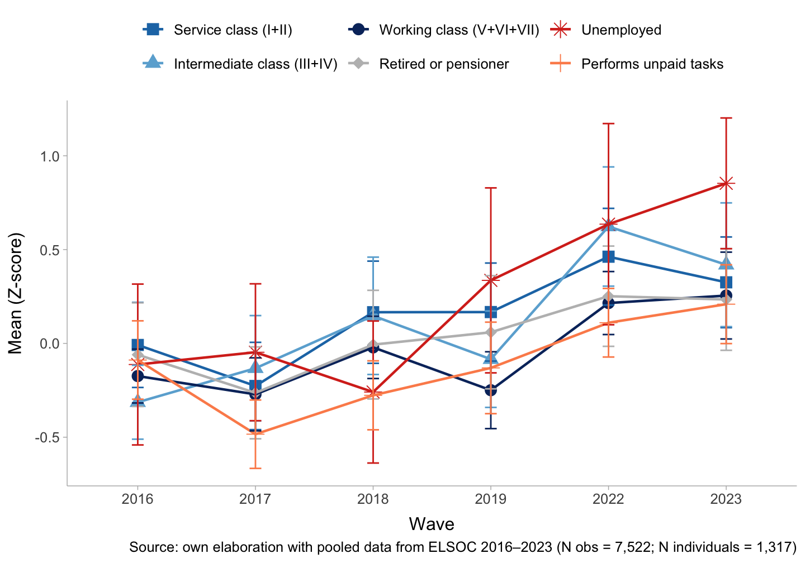
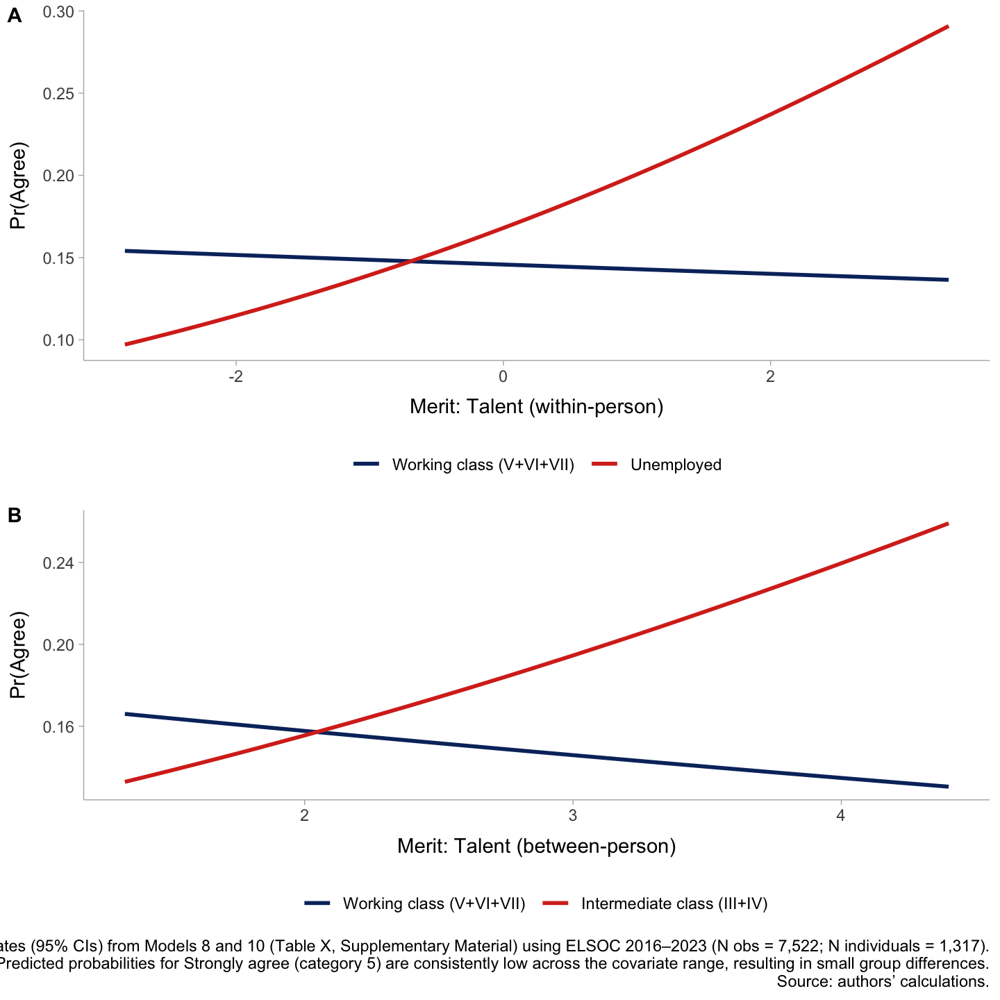

![]()
This document was last modified at {{}} and it was last rendered at {{}}.
1 Introduction
The pension system lies at the core of the welfare state, playing a key role in shaping income distribution and risk exposure among the elderly population (Breznau, 2023; Esping-Andersen, 1990). The pension system is based on the common understanding that older people need financial support after retirement, so pensions built up during working life are intended to provide this (OECD, 2023). In this understanding, the principles of justice held by a society are crucial, as they shape how individuals perceive the fairness of pension systems and the distribution of benefits (Liebig & Sauer, 2016). For instance, in systems that emphasize social solidarity, there may be a greater support for redistributive mechanisms to ensure a more equitable distribution of pension benefits across different social groups. Conversely, in societies where meritocratic beliefs are prevalent, individuals may justify inequalities in pension benefits on the grounds of factors such as work history, contributions to the system, and individual effort (Castillo et al., 2024; Mau, 2015; Mijs, 2019).
The Chilean pension system is a particularly instructive case for studying the principles of justice governing pension benefits, given its long-standing experience with pension privatization. In 1981, Chile became the first country to replace a public pay-as-you-go scheme with a fully privatized, defined-contribution system based on mandatory individual capitalization accounts administered by private financial institutions (Solimano, 2021). Under this model, individuals with higher earnings and denser contribution histories receive substantially higher pensions, whereas those with lower and more unstable incomes obtain very low benefits, especially workers in low-prestige occupations and women (Arenas, 2019; Madero-Cabib et al., 2019). This system has generated marked inequalities and heightened risks of poverty in old age, leaving many older adults struggling to make ends meet (Borzutzky & Hyde, 2016; Cabib, 2025; Gálvez et al., 2024; Subsecretaría de Previsión Social, 2023). In this context, widespread public discontent and powerful social movements demanding far-reaching pension reforms have emerged in recent years (Somma et al., 2021). Nevertheless, despite this discontent, recent evidence shows that an essential and growing share of the population continues to justify income-based differences in pension benefits on the grounds of individual contributions—that is, to endorse market-based access to pensions (Castillo et al., 2025). Understanding how meritocratic beliefs and social class shape these preferences for market-based pension benefits is therefore crucial for informing policy debates and advancing social justice (Busemeyer & Iversen, 2020; Svallfors, 2007).
The concept of market justice refers to the belief that the distribution of goods and services (as pensions) should be determined by market mechanisms, such as supply and demand, rather than by social or political considerations (Lane, 1986; Lindh, 2015). More specifically, research on market justice focuses on individual payment capacity and contribution as the primary criteria for resource allocation, emphasizing personal responsibility and effort over collective welfare (Castillo et al., 2024; Kluegel et al., 1999; wilson_market_1997?). Within this framework, the present paper analyzes how meritocratic beliefs and social class are associated with preferences for market justice in Chilean pensions, and how these associations have evolved between 2016 and 2023. On the one hand, social class has been shown to influence individuals’ perceptions of justice and fairness in various social contexts, including pensions, as it shapes their experiences and access to resources (Busemeyer & Iversen, 2020; Svallfors, 2007). In this regard, individuals from higher social classes may be more likely to justify market-based pensions, as they may benefit more from the existing system. On the other hand, meritocracy is a widely held belief that individuals should be rewarded based on their abilities and efforts (McNamee & Miller, 2004; Young, 1975). In the context of pensions, this belief may lead individuals to justify inequalities in pension benefits based on their contributions to the system.
To address these issues, we utilize data from the Chilean Longitudinal Social Survey (ELSOC) conducted between 2016 and 2023. This survey provides a comprehensive overview of public attitudes towards social justice issues in Chile, including perceptions of pensions and income distribution. By analyzing these data, we aim to elucidate the complex interplay among meritocratic beliefs, social class, and preferences for pension market justice in Chile over time.
The paper is structured as follows. First, we review the relevant literature on meritocratic beliefs, social class, and market justice preferences. Next, we describe the data and methodology used in our analysis. We then present our findings on the associations between meritocratic beliefs, social class, and the justification of pension inequality in Chile from 2016 to 2023. Finally, we discuss the implications of our findings for policy and future research.
2 Theoretical and empirical background
2.1 Market justice preferences
In recent years, welfare states have undergone several institutional transformations, with market expansion strongly penetrating the field of social services and rights, emerging private alternatives in parallel to public provision (Busemeyer & Iversen, 2020). Such processes have led to changes in the architecture of the institutions responsible for social welfare, where private companies operate as service administrators that limit access based on the user’s ability to pay, while public providers have reorganized to compete as quasi-markets (Lindh, 2017). Despite the commodification of social services, this does not only imply changes at the formal level, but also shapes the beliefs of individuals. In this way, market-oriented policies can modify people’s normative criteria, promoting or weakening support for different goods or services. This phenomenon is known as policy feedback effect.(Béland & Schlager, 2019; Jaime-Castillo, 2013). Therefore, markets operate not only in a formal dimension, but also as moral projects (Fourcade & Healy, 2007).
In distributive justice field, market preferences have gained relevance in attitudinal studies on redistribution. The inaugural study in this line of research was by Kluegel & Smith (1981), analyzing the normative bases of beliefs about social stratification. In this context, market justice emerges as one of the central concepts in this literature, understood as a normative principle that legitimizes access to goods and services based on individual or family ability to pay, which is opposed to social justice (Lane, 1986). This market-oriented redistribution is closely related to the justification of inequalities, as it considers the market to be a space of equal opportunity, where economic success is understood as an individual outcome (Kluegel et al., 1999). In this way, market justice legitimizes socioeconomic inequalities from an economic-moral perspective, ignoring the structural conditions that generate disparities.
In the market justice frame, pensions have been one of the most studied elements due to their centrality in discussions of economic distribution among the elderly population (Arenas, 2019). Some pension systems are based on principles of solidarity, demonstrating solid security systems. On the other hand, there are pension systems based on privatization policies, managing resources according to market logic such as investments, which runs counter to principles of solidarity (Arrizabalo Montoro et al., 2019). Pension system policies have cultural implications for societies. For example, market-oriented plans are associated with feelings of insecurity due to the individualization of risk. (Yen, 2018). From a broader perspective, depending on the policies applied in pension systems, these have a positive or negative effect on preferences for market justice (Castillo et al., 2025).
Recent literature on market preferences has found striking associations with both individual and contextual factors. Various studies suggest that people with higher socioeconomic status tend to adopt greater market preferences than those who are in a more disadvantaged social position (Koos & Sachweh, 2019; Lindh, 2015). Similarly, political ideology has been linked to preferences for market justice, with right-wing individuals mostly supporting market-oriented distribution (Castillo et al., 2024; Lee & Stacey, 2024). These trends reflect a moral economy based on the justification of status by those who enjoy the benefits of the market. With regard to contextual factors, evidence suggests that in countries with greater private investment in services, individuals tend to decrease their preferences for redistribution, internalizing the market order as a criterion of justice, while in countries where public provision of services prevails, individuals show resistance to market-induced inequalities (Busemeyer, 2013; Immergut & Schneider, 2020; Lindh, 2015).
Research strategies on market preferences have focused on operationalizing this concept in order to empirically study how individuals’ beliefs are shaped by macro-structural conditions, such as the application of privatization policies to goods such as education, health, or pensions (Busemeyer, 2013; Kerner, 2020; Lindh, 2015). Subsequently, market preferences have been studied in detail in surveys, where International Social Survey Program (ISSP) has led the comparative study between countries focused on social inequality, asking how fair it is considered that those with higher incomes have access to better education, health, and/or pensions from 1999 to the present day (Immergut & Schneider, 2020; Lindh, 2015). In this frame, ISSP has been one of the most important resources for building a market justice agenda. Based on the ISSP measurement proposal, other researches have measured market preferences using an index constructed from three items referring to market justice in the three main social services, operationalizing the concept of preferences for market justice (Castillo et al., 2025). In short, all the strategies employed seek to understand the extent to which market-generated inequalities are legitimized.
2.2 Meritocracy
Meritocracy is a normative principle that justifies the distribution of goods and services based on individual effort and talent, emphasizing that rewards should correspond to personal achievements rather than social status or inherited privileges (Sandel, 2020; Young, 1975). This concept has gained prominence in contemporary societies, where meritocratic ideals are often invoked to legitimize socioeconomic inequalities, suggesting that individuals’ success or failure is primarily determined by their own merits (Littler, 2018).
Research on meritocratic beliefs has explored how individuals perceive the fairness of social systems that prioritize merit-based distribution. Studies have shown that people who strongly endorse meritocratic ideals tend to justify existing inequalities, attributing success to personal effort and downplaying the role of structural factors such as social class (Reynolds & Xian, 2014). This perspective can lead to reduced support for redistributive policies, as individuals may view such interventions as undermining the principles of meritocracy (Piketty, 2014).
Empirical investigations have also examined the relationship between meritocratic beliefs and various demographic and ideological factors. For instance, individuals with higher socioeconomic status are more likely to endorse meritocratic ideals, as they often benefit from systems that reward their efforts and talents (Harrs & Sterba, 2025). Additionally, political ideology plays a significant role, with right-leaning individuals typically exhibiting stronger support for meritocracy compared to their left-leaning counterparts. Contextual factors also influence meritocratic beliefs. Although in in societies with high levels of social mobility and equal opportunities, individuals may be more inclined to endorse meritocratic ideals, some evidence suggest that ienquality is linked to larger meritocratic perception, aka the paradox of meritocracy (Mijs, 2021). Overall, the concept of meritocracy remains a central theme in discussions about social justice and inequality, highlighting the complex interplay between individual effort, structural conditions, and societal values.
The measurement of meritocratic beliefs has been approached through various survey instruments that assess individuals’ attitudes towards effort, talent, and the fairness of merit-based systems. Commonly used items include questions about the importance of hard work for success, the role of innate ability, and perceptions of fairness in competitive environments (Castillo et al., 2023). In the extant literature the measurement of meritocratic beliefs has often been inconsistent, with different studies employing varying scales and items, making cross-study comparisons challenging. To address this issue, some researchers have advocated for the development of standardized measures that capture the multifaceted nature of meritocratic beliefs. A first distiction to make here is the one between perceptions and preferences for meritocracy, usually the first being descriptive and the second more normative in nature (Castillo et al., 2023). Research on meritocratic perceptions have reveal that people’s beliefs about the extent to which meritocracy exists in society can differ significantly from their normative support for meritocratic principles (Castillo et al., 2023). Besides, whereas meritocratic preferences are usually more consensual, meritocratic perceptions tend to vary more across individuals and contexts.
2.4 The Chilean context
Despite sustained economic growth, Chile remains one of the most unequal countries in Latin America and the OECD. The poorest 50% of the population earns only 8.2% of total income and holds around 3% of net wealth, while the richest 1% receive almost 27% of all income and control 37% of the country’s wealth (Chancel et al., 2025), a pattern that has changed little since the 1990s (Flores et al., 2020). These inequalities are not simply the outcome of market forces; they are rooted in neoliberal reforms that privatised and commodified key spheres of social reproduction (Ferre, 2023; PNUD, 2017). Introduced under the military dictatorship (1973–1989) and subsequently expanded by democratic governments, these reforms entrenched market logics in essential public services through concessions and regulatory frameworks that favoured private provision, producing a model of commodified public services that underpins Chile’s neoliberal order (Ffrench-Davis, 2018; Madariaga, 2020). Health and education have been extensively studied in this regard (Llambías-Wolff, 2019; Rosenzvaig-Hernandez, 2024), revealing structurally segmented systems in which access and quality depend heavily on the ability to pay (Castillo et al., 2025). Pensions represent a paradigmatic case of this broader welfare marketisation, unfolding under conditions of high inequality and market-based provision in a core domain of social protection.
Since 1981, old-age income security in Chile has been organised primarily through a fully privatised, mandatory defined-contribution scheme. A far-reaching reform replaced the previous earnings-related, pay-as-you-go social insurance system with individual capitalisation accounts administered by private Pension Fund Administrators (AFP) (Huber & Stephens, 2000; Solimano, 2021). Under this design, dependent employees must contribute 10% of their wages, plus an administrative fee, to individual accounts, while employers face no mandatory contributions. AFPs invest these savings in domestic and international financial markets. Since the early 2000s, affiliates have been assigned to, or have chosen among, several “multifunds” (A–E) with distinct risk–return profiles (Barriga & Kremerman, 2024; Hyde & Borzutzky, 2015). After more than four decades, benefit levels remain modest: for most retirees, AFP-financed pensions fall below the statutory minimum wage, and self-funded replacement rates hover around 30%, even among workers with long and dense contribution records (Gálvez et al., 2024; Madero-Cabib et al., 2019). In response, the state has progressively expanded tax-financed solidarity components—most notably the Nuevo Pilar Solidario (2008) and the Pensión Garantizada Universal (PGU, 2022)—to top up low or non-existent contributory pensions among poorer and lower-middle older adults (Boccardo, 2020). This has produced a hybrid arrangement in which privately managed individual accounts are substantially subsidised by the state, and public transfers constitute a sizeable share of total pension income at the bottom of the distribution (Gálvez et al., 2024). Crucially, this model not only shapes pension outcomes; it also frames pensions as the result of individual contributions and financial returns, making inequalities appear, at least in part, as earned and therefore potentially justifiable.
This institutional configuration both reflects and reinforces Chile’s broader pattern of persistent inequality combined with extensive welfare privatisation. Stratified access to social protection has eroded expectations of upward mobility and contributed to social unrest, with pensions becoming a focal point of public discontent and protest (PNUD, 2017; Somma et al., 2021). At the same time, the attitudinal landscape is not univocal. Alongside widespread criticism of the private pension system and repeated demands for reform, recent evidence suggests that a growing share of the population considers pension inequalities based on individual contribution histories to be fair or legitimate (Castillo et al., 2025). This coexistence points directly to the problem of pension market justice: how, and for whom, market-based principles of allocation become morally acceptable in the context of old-age security. These developments are embedded in broader transformations of Chile’s class structure and moral orientations. Meritocratic beliefs have intensified, accompanying the diffusion of market-centred moral frameworks in which individuals and families are expected to act as self-responsible agents, investing in their own “market value” and bearing the risks of their life-course trajectories (Canales Cerón et al., 2021; Mau, 2015). In a context marked by high and durable inequalities, deep marketisation of welfare, and the entrenchment of meritocratic beliefs, it becomes crucial to examine support for pension market justice, how it varies across social classes and meritocratic orientations, and how it has evolved (Castillo et al., 2025; Castillo et al., 2024).
2.5 This study
Building on class-based accounts of distributive preferences, we expect support for pension market justice to vary systematically across the class structure. Prior research shows that higher class position is associated with lower support for redistributive policies and a stronger inclination toward market-based allocation (Koos & Sachweh, 2019; Lindh, 2015). In contexts where access and quality are more closely tied to purchasing power, advantaged groups face fewer constraints and risks, making market allocation both more feasible and more defensible as a distributive principle.
We further argue that meritocratic perceptions provide a key normative lens through which individuals evaluate pension inequalities. Existing work suggests that perceiving society as meritocratic is positively related to market-oriented preferences in welfare domains, including pensions, both cross-sectionally and over time (Castillo et al., 2025; Castillo et al., 2019). Individuals who see effort and talent as decisive for success are more likely to view income-linked differences as legitimate outcomes of individual contribution and deservingness (Castillo et al., 2024). Hence, meritocratic perceptions should be associated with stronger pension market justice preferences, not only between individuals but also as people revise these beliefs over time.
Finally, we examine whether class conditions the attitudinal implications of meritocracy. Because the earnings–contributions–benefits link is typically more favourable for advantaged groups, meritocratic narratives may be more congruent with their material position and experiences. We therefore expect the association between meritocracy and pension market justice preferences to be stronger among upper-class respondents. In addition, we explore whether within-person increases in meritocratic perceptions translate into larger changes in pension market justice among upper-class individuals than among those in lower classes.
Based on these arguments, we propose the following hypotheses:
H1 ; (\text{Between-person}): Those belonging to the upper classes show, on average, higher pension market justice preferences than those belonging to the lower classes.
H2_{a} ; (\text{Between-person}): Individuals with stronger meritocratic perceptions show, on average, higher pension market justice preferences.
H2_{b} ; (\text{Within-person}): When the same individual strengthens their meritocratic perceptions over time, their pension market justice preferences increase.
H3_{a} ; (\text{Between-person}): The positive association between meritocracy (BE) and pension market justice preferences is stronger in upper classes.
H3_{b} ; (\text{Within-person}): When upper-class individuals increase their meritocratic perceptions over time (WE), their pension market justice preferences rise more than in lower classes.
3 Data, Variables and Methods
3.1 Data
This research draws on the Chilean Longitudinal Social Survey (ELSOC), a national panel study fielded between 2016 and 2023 to examine attitudes, emotions, and behaviors among adults aged 18 to 75 in relation to social cohesion and conflict. ELSOC uses a probabilistic, stratified, clustered, multistage sampling design covering urban centers and small towns. The sampling frame is proportionally stratified into six categories of urban population size; within these strata, households were selected through multistage procedures based on 1,067 sampled blocks.
ELSOC has been administered annually since 2016, except in 2020 when fieldwork was suspended due to the COVID-19 pandemic. For this study, we use waves 2016, 2017, 2018, 2019, 2022, and 2023. The 2021 wave is excluded because the questionnaire version omitted key variables for the analysis. By wave 6, cumulative panel attrition was approximately 40%; we therefore restrict the analysis to a balanced panel, yielding a two-level data set of N = 5,755 observations nested within N = 1,027 individuals. Additional documentation on sampling, attrition, and weighting is available from the ELSOC study team, and the data are publicly accessible through the ELSOC Dataverse.
3.2 Variables
3.2.1 Market justice preferences for pensions
The dependent variable in this study is preferences for market justice in pension. This construct is measured by a single item that captures how strongly individuals endorse conditioning access to better pensions on income. Specifically, the question is: “Is it fair that high-income individuals have better pensions than lower-income individuals?” The response options range from 1 (“Strongly disagree”) to 5 (“Strongly agree”). Higher values indicate greater acceptance of income-based pension differences—that is, stronger support for market-justified pension inequality.
3.2.3 Meritocracy
Following Young’s (1975) distinction, this construct is operationalised into two dimensions: effort and talent. Both dimensions are measured by the degree of agreement with statements indicating that effort and talent are rewarded in society. Specifically, meritocratic perceptions of effort are captured by the item “In Chile, people are rewarded for their efforts” (Merit: Effort), and meritocratic perceptions of talent by the item “In Chile, people are rewarded for their intelligence and abilities” (Merit: Talent). Both items are answered on a 5-point Likert scale ranging from 1 (“Strongly disagree”) to 5 (“Strongly agree”), with higher values indicating stronger perceptions that Chilean society operates according to meritocratic principles.
Table 1 shows the main variables of the study, their response categories and their frequencies.
| Label | Stats / Values | Freqs (% of Valid) | Valid |
|---|---|---|---|
| Pension distributive justice | 1. Strongly disagree 2. Disagree 3. Neither agree nor disagre 4. Agree 5. Strongly agree |
296 (17.5%) 687 (40.6%) 235 (13.9%) 419 (24.7%) 57 ( 3.4%) |
1694 (100.0%) |
| Social class | 1. Service class (I+II) 2. Intermediate class (III+I 3. Working class (V+VI+VII) 4. Out of labor force |
146 ( 8.6%) 459 (27.1%) 421 (24.9%) 668 (39.4%) |
1694 (100.0%) |
| People are rewarded for their efforts | 1. Strongly disagree 2. Disagree 3. Neither agree nor disagre 4. Agree 5. Strongly agree |
174 (10.3%) 776 (45.8%) 379 (22.4%) 335 (19.8%) 30 ( 1.8%) |
1694 (100.0%) |
| People are rewarded for their intelligence | 1. Strongly disagree 2. Disagree 3. Neither agree nor disagre 4. Agree 5. Strongly agree |
142 ( 8.4%) 676 (39.9%) 429 (25.3%) 418 (24.7%) 29 ( 1.7%) |
1694 (100.0%) |
3.2.4 Controls
Based on previous research (Castillo et al., 2025; Jaime-Castillo, 2013; Lindh, 2015), the statistical models include sociodemographic and attitudinal controls to account for potential compositional effects in the population. We adjust for sex (1 = male, 2 = female), age (in years), educational attainment (1 = less than university, 2 = university), and political identification (1 = left, 2 = centre, 3 = right, 4 = no identification). Following Langsæther et al. (2022), we do not control for income, as it can be conceived as a consequence of social class—that is, a post-treatment variable—and thus risks introducing collider bias into the estimates. Descriptive statistics for the control variables can be found in the Supplementary material.
3.3 Analytical Strategy
To examine longitudinal changes in pension inequality justification and its relationship with social class and meritocratic beliefs, we employ Cumulative Link Mixed Models (CLMM) for ordinal responses. This approach is particularly well-suited for our analytical goals for several reasons. First, it preserves the ordinal nature of our dependent variable without imposing assumptions about equal spacing between response categories. Second, it accounts for the hierarchical structure of our panel data, with repeated observations (Level 1) nested within individuals (Level 2). Third, it enables the decomposition of variance into within-person (WE) and between-person (BE) components, allowing us to distinguish temporal changes within individuals from stable differences between individuals (Bell et al., 2019; Singer, 2003).
3.3.1 Within-Person and Between-Person Random Effects Models
Following the recommendations of Bell & Jones (2015), we decompose time-varying predictors into their within-person and between-person components using person-mean centering:
X_{WE_{it}} = X_{it} - \bar{X}_i
X_{BE_i} = \bar{X}_i
where X_{it} represents the observed value for individual i at time t, \bar{X}_i is the person-specific mean across all observations, X_{WE_{it}} captures within-person deviations from the individual mean (representing temporal fluctuations), and X_{BE_i} represents stable between-person differences (time-invariant characteristics).
This decomposition allows us to distinguish two theoretically distinct processes: (1) Within-person effects capture how changes in an individual’s meritocratic beliefs over time relate to changes in their pension inequality justification, controlling for stable individual characteristics. (2) Between-person effects capture how individuals with different average levels of meritocratic beliefs differ in their pension inequality justification, net of temporal fluctuations.
3.3.2 Model Specification
The general form of our cumulative link mixed model is:
\begin{split} \eta_{it} = \beta_0 + \beta_1 \text{time}_{it} + \beta_2 X_{WE_{it}} + \beta_3 X_{BE_i} + \beta_4 \text{Class}_i + \\ \beta_5 (\text{Class}_i \times X_{WE_{it}}) + \beta_6 (\text{Class}_i \times X_{BE_i}) + u_{0i} + u_{1i} \text{time}_{it} \end{split}
where \eta_{it} is the linear predictor for individual i at time t, linked to the cumulative probabilities through a logit link function; \beta_0 is the fixed intercept (threshold); \beta_1 captures the linear time trend; \beta_2 and \beta_3 represent within-person and between-person effects of meritocratic perceptions, respectively; \beta_4 captures social class between effects; \beta_5 and \beta_6 represent interactions between social class and within/between-person meritocratic perceptions; u_{0i} is the random intercept (capturing unobserved individual heterogeneity); and u_{1i} is a random slope for time (allowing individual-specific temporal trajectories).
The random effects are assumed to follow a bivariate normal distribution:
\begin{pmatrix} u_{0i} \\ u_{1i} \end{pmatrix} \sim N \begin{pmatrix} \begin{pmatrix} 0 \\ 0 \end{pmatrix}, \begin{pmatrix} \sigma^2_{u_0} & \sigma_{u_{01}} \\ \sigma_{u_{01}} & \sigma^2_{u_1} \end{pmatrix} \end{pmatrix}
3.3.3 Model Building Strategy
We estimate a series of nested models to test our hypotheses:
- Model 1 (Time Effects): Baseline model examining temporal trends with linear and quadratic time terms
- Model 2 (Class Effects): Adds social class as a predictor
- Model 3 (Within-Person Effects): Includes within-person meritocratic beliefs
- Model 4 (Between-Person Effects): Adds between-person meritocratic beliefs
- Model 5 (Full Model with Controls): Incorporates sociodemographic controls (education, political identification, sex, age)
- Model 6 (Interactions): Tests interactions between social class and meritocratic beliefs (both WE and BE)
All models are estimated using maximum likelihood with the Hessian matrix computed explicitly to obtain standard errors. Longitudinal survey weights are applied to account for the complex sampling design and panel attrition. Models are implemented using the clmm() function from the ordinal package in R (Christensen, 2019).
4 Results
4.1 Descriptive analysis
Figure 1 depicts the temporal evolution of market justice preferences in pensions from 2016 to 2023. Each year presents percentage frequencies, and the flows between them reflect changes in opinion among the same people from one year to the next. The results indicate substantial attitudinal fluidity, with extensive cross-flows suggesting that many respondents revise their views over time rather than holding fixed positions. Most changes occur between adjacent categories, consistent with gradual shifts, although some movements span multiple categories. For example, among those who strongly disagreed with income-based pension access in 2019, about 15.2% remained in that position by 2022, while the remaining 12.5% shifted to other categories, primarily to disagreement or agreement. Overall, the majority continue to disagree with the notion that it is fair for higher-income people to receive better pensions than those with lower incomes. Yet, agreement has increased over time: the combined share of agree + strongly agree rises from 16.9% in 2019 to 28.4% in 2023 (an increase of roughly 11.5 percentage points). Transitions appear particularly turbulent during the 2019–2022 period—overlapping with social unrest and the pandemic—suggesting that these attitudes are responsive to major contextual shocks and shifts in pension-related public discourse.

4.2 Bivariate relationships
Figure 2 shows the correlation matrix between meritocratic perceptions and preferences for pension market justice. Both effort-based (r = 0.10, p < 0.001) and talent-based (r = 0.08, p < 0.001) meritocratic perceptions are positively associated with greater support for market-based pension welfare. Although these correlations are modest, their statistical significance indicates a consistent bivariate relationship. The two meritocracy indicators are also strongly correlated (r = 0.68, p < 0.001), suggesting they capture a shared meritocratic worldview while remaining sufficiently distinct to justify treating them as separate constructs. Taken together, these patterns provide initial support for the expectation that meritocratic perceptions are associated with greater acceptance of income-linked pension outcomes, while also suggesting that other factors likely account for most of the variation in these preferences.

Turning to social class differences, Figure 3 plots longitudinal trajectories of pension market justice by class from 2016 to 2023. The figure shows a broadly upward trend across all classes, especially after 2019, alongside increasingly similar levels over time. The unemployed group shows the most significant change, moving from strong rejection (approximately −0.6 in 2016) to moderate acceptance (approximately 0.7 in 2023). Retirees/pensioners also increase steadily, from near zero in 2016 to roughly 0.5 by 2023, and the service class rises notably—particularly between 2019 and 2022—reaching values close to 0.5. The working class follows a similar trajectory, though at slightly lower levels. Overall, the trajectories suggest convergence toward greater acceptance of pension inequality during 2019–2023, a period marked by social unrest, the pandemic, and pension fund withdrawals (10% retiros), raising questions about how these disruptions and the surrounding policy debate reshaped views of distributive justice.

4.3 Multilevel models
Table 2 reports estimates from the cumulative longitudinal multilevel models of support for pension market justice, distinguishing effects operating between individuals (BE) and within individuals over time (WE). The intraclass correlation coefficient (Hox et al., 2017) from the null model (see Supplementary Material), which partitions the total variance in the outcome, is 0.24. This implies that about 24% of the variance lies between individuals, while the remaining 76% reflects within-person change across survey waves.
| Model 1 | Model 2 | Model 3 | Model 4 | Model 5 | Model 6 | |
|---|---|---|---|---|---|---|
| Wave (Ref.= 2016) | ||||||
| Wave 2017 | -0.337*** | |||||
| (0.079) | ||||||
| Wave 2018 | -0.013 | |||||
| (0.078) | ||||||
| Wave 2019 | 0.086 | |||||
| (0.077) | ||||||
| Wave 2022 | 0.879*** | |||||
| (0.078) | ||||||
| Wave 2023 | 0.854*** | |||||
| (0.077) | ||||||
| Wave | -0.182** | -0.179** | -0.187** | -0.190** | -0.192** | |
| (0.064) | (0.064) | (0.064) | (0.064) | (0.064) | ||
| Wave^2 | 0.059*** | 0.058*** | 0.060*** | 0.060*** | 0.060*** | |
| (0.009) | (0.009) | (0.009) | (0.009) | (0.009) | ||
| Social class (Ref.= Working class (V+VI+VII) | ||||||
| Intermediate class (III+IV) | 0.096 | 0.101 | 0.147 | 0.185 | ||
| (0.120) | (0.121) | (0.118) | (0.117) | |||
| Service class (I+II) | 0.169 | 0.169 | 0.158 | 0.017 | ||
| (0.108) | (0.108) | (0.106) | (0.109) | |||
| Retired or pensioner | 0.103 | 0.096 | 0.030 | 0.110 | ||
| (0.117) | (0.117) | (0.115) | (0.127) | |||
| Unemployed | 0.101 | 0.105 | 0.147 | 0.119 | ||
| (0.158) | (0.158) | (0.155) | (0.152) | |||
| Performs unpaid tasks | -0.199 | -0.198 | -0.208 | 0.029 | ||
| (0.110) | (0.111) | (0.109) | (0.113) | |||
| Merit: Effort (WE) | 0.114** | 0.117*** | 0.115** | |||
| (0.035) | (0.035) | (0.035) | ||||
| Merit: Talent (WE) | 0.066 | 0.066 | 0.067 | |||
| (0.034) | (0.034) | (0.034) | ||||
| Merit: Effort (BE) | 0.391*** | 0.387*** | ||||
| (0.097) | (0.093) | |||||
| Merit: Talent (BE) | 0.079 | 0.028 | ||||
| (0.097) | (0.094) | |||||
| Controls | No | No | No | No | No | Yes |
| BIC | 19107.264 | 19166.031 | 19199.863 | 19182.632 | 19144.360 | 19097.183 |
| Numb. obs. | 7522 | 7522 | 7522 | 7522 | 7522 | 7522 |
| Num. groups: individuals | 1317 | 1317 | 1317 | 1317 | 1317 | 1317 |
| Var: individuals (Intercept) | 1.151 | 1.334 | 1.302 | 1.288 | 1.146 | 1.014 |
| Var: individuals, wave | 0.018 | 0.018 | 0.015 | 0.015 | 0.016 | |
| Note: Cells contain regression coefficients with standard errors in parentheses. ***p < 0.001; **p < 0.01; *p < 0.05. | ||||||
Model 1, which adds survey-wave indicators to capture temporal shifts in the outcome, shows a decline in 2017 (\beta = -0.337, p < 0.001) relative to 2016. By contrast, the 2022 and 2023 waves exhibit significant increases in market justice preferences for pension (\beta = 0.879, p < 0.001; \beta = 0.854, p < 0.001), indicating a nonlinear pattern over time. To account for this trajectory, Model 2 specifies time (survey wave) as a continuous predictor and includes a quadratic term to capture the curvature suggested by Model 1. The negative linear coefficient indicates an overall downward trend in market-based access to old-age pension benefits, whereas the positive quadratic term signals a subsequent upturn in the final measurement points.
Model 3 adds between-group effects (BE) for social class, capturing differences in average support for pension market justice across class locations. Overall, the estimates provide no evidence of systematic class differences in the support for market-based access to old-age pension benefits. Using the working class as the reference group, those in the intermediate class (\beta = 0.10, p > 0.05), the service class (\beta = 0.17, p > 0.05), retirees (\beta = 0.10, p > 0.05), and the unemployed (\beta = 0.10, p > 0.05) exhibit positive coefficients, but none reach conventional levels of statistical significance. Likewise, individuals performing unpaid work (e.g., domestic or care work) show a negative coefficient relative to the working class, which is not statistically significant (\beta = -0.20, p > 0.05). Taken together, these results suggest that neither class position nor being outside the labour force is clearly associated with differences in preferences for pension market justice at the between-individual level.
Models 4 and 5 extend the analysis by incorporating the within-person (WE) and between-person (BE) components of the meritocratic variables. Model 4 examines how changes in individuals’ meritocratic perceptions over time relate to their views on pension market justice. The estimates show that the within-effect of perceiving that effort is rewarded is positive and highly significant (p < 0.001). Holding all other predictors constant, a one-point increase in effort-based meritocratic perceptions for the same respondent between waves is associated with a 0.11-point increase in the support for market-based access to old-age pension benefits. Model 5, which captures between-person differences, points in the same direction. On average, respondents who see their society as more effort-meritocratic display stronger market-oriented views on pensions, with a 0.39-point higher score on the outcome, a statistically significant association. By contrast, the corresponding indicators for the perception that intelligence and ability are rewarded show no statistically significant association with the support for pension market justice at either the within (\beta = 0.07, p > 0.05)- or between-person level (\beta = 0.08, p > 0.05).

Model 6 introduces the control variables. The within- and between-effects of the main predictors remain stable in both sign and significance, indicating that the associations are robust (see Supplementary Material for the effects of the control variables).
To examine whether meritocratic perceptions condition class differences in pension market justice preferences, we estimate four interaction models that combine between-person social class with the within- and between-person components of meritocratic perceptions. Overall, interaction terms are small and generally not statistically distinguishable from zero, and improvements in model fit over the baseline specifications are modest. This pattern indicates that the association between meritocratic perceptions and support for market-based pension allocation is similar mainly across class locations (complete model estimates are reported in the Supplementary Material).
Two interaction effects nevertheless stand out and are illustrated in Figure 4. First, panel A shows that the within-person association between talent-based meritocratic perceptions and pension market justice differs by labour-market status. Within-person deviations in perceived talent rewards are unrelated to pension market justice in the reference group (\beta = −0.024, p = .67), but become significantly more positive among unemployed respondents (interaction \beta = 0.257, p = .049), implying a net within-person effect of \beta = 0.233 (OR ≈ 1.26). Second, panel B indicates that the between-person association between average (person-mean) talent-based meritocratic perceptions and pension market justice varies by social class: it is null in the working class (\beta = −0.089, p = .50) but significantly stronger in the intermediate class (interaction \beta = 0.401, p = .035), yielding a positive between-person slope of \beta = 0.313 (OR ≈ 1.37). Taken together, these models indicate a largely homogeneous association between meritocratic beliefs and pension market justice, with limited evidence of moderation. Where moderation emerges, it is concentrated in the talent dimension and confined to specific middle-class and non-class positions rather than reflecting systematic stratification across the whole class structure.
5 Discussion
Regarding descriptive trends, survey data from 2016 to 2023 reveal a persistent tension in Chileans’ judgments regarding pension market justice. In every wave, clear majorities reject the idea that it is fair for higher-income individuals to receive better pensions than lower-income individuals. At the same time, a small—but expanding—segment endorses this income-based principle, with the sharpest growth occurring between 2018 and 2023. Pension market justice, therefore, remains a minority orientation, yet one that has become more prevalent over time, in line with longitudinal evidence of rising support for income-based access to other welfare services in Chile, such as healthcare and education (Castillo et al., 2025). These attitudes are formed within an institutional architecture of mandatory, privately managed, defined-contribution accounts that tightly link old-age income to labor earnings, contribution stability, and market performance (Madero-Cabib et al., 2019; Solimano, 2021), and that can symbolically recast pensions from solidarity-based social rights into individual financial assets. In this respect, Chile mirrors broader findings that income-based access to welfare is more strongly endorsed in liberal, marketised regimes (Lindh, 2015). Taken together, these descriptive patterns suggest that support for pension market justice—contested and far from hegemonic—nonetheless constitutes a salient orientation that invites explanation: which social trajectories and belief structures sustain it?
Concerning social class, the results provide no support for H_1, which predicted stronger endorsement of pension market justice among the upper classes than among the lower classes. The longitudinal multilevel models indicate that neither the intermediate class nor the service class differs significantly from the working class in their pension market justice preferences. This null finding is substantively meaningful because it indicates that class position—despite being a fundamental structural determinant of pension outcomes in Chile’s individual capitalization system (Gálvez et al., 2024; Madero-Cabib et al., 2019)—does not translate into systematic differences in attitudes toward the system’s distributive logic. Moreover, the lack of significant class effects persists across most specifications, suggesting that this is a robust empirical pattern rather than an artifact of a particular model choice or set of controls.
This absence of class differentiation contradicts expectations derived from material interests (Lindh, 2015; Svallfors, 2006) and contrasts with evidence from developed welfare states (Busemeyer & Iversen, 2020; Lindh, 2015) and from market-oriented welfare configurations in Latin America (Kerner, 2020), where privileged groups tend to endorse market allocation more strongly than lower classes. The result is particularly striking given the system’s sharply unequal material consequences across class positions: while privileged groups with stable formal employment can secure higher pensions through sustained contributions, working-class trajectories are more often precarious and yield insufficient retirement income (Cabib, 2025; Gil-Hernández et al., 2025). A plausible interpretation of this disconnect between objective class interests and subjective justice evaluations lies in the individualising logic of Chile’s capitalization system, which reframes distributive conflict away from class-based struggles and toward individualized responsibility (Arrizabalo Montoro et al., 2019). By presenting pensions as the direct outcome of personal contributions and choices, the system may obscure the extent to which “contributory capacity” itself reflects structural inequalities rather than individual merit, thereby weakening the attitudinal imprint of class position—even among those most disadvantaged by the market model.
Turning to meritocratic perceptions, H_{2a} and H_{2b} predicted that stronger meritocratic perceptions would be associated with greater support for market-based access to pensions. The results offer partial but revealing support for this hypothesis. At the between-person level (BE), the perception that effort is rewarded in society is strongly positively associated with pension market justice. In contrast, the perception that talent is rewarded is not statistically significant. At the within-person level (WE), effort-based meritocratic perceptions also show a significant positive association, albeit of smaller magnitude, whereas talent remains non-significant. Substantively, this means that individuals who, on average, perceive more substantial effort–reward linkages are more supportive of pension market justice, and individuals who increase their effort-based meritocratic perceptions over time also tend to increase their support for pension market justice. The contrast between effort and talent suggests that when people justify pension market allocation, they draw primarily on narratives of hard work and responsibility rather than on innate ability.
These findings align with a broader view of meritocracy as a legitimising ideology in highly unequal contexts. In Chile’s individual capitalization system, where pensions are institutionally presented as the direct result of personal contributions and choices, the effort narrative provides a compelling cognitive frame for justifying disparities: higher pensions can be interpreted as the deserved outcome of “working harder,” regardless of the structural constraints faced by different groups (Castillo et al., 2025). This pattern echoes scholarship suggesting that meritocratic perceptions can intensify precisely where real opportunities are most constrained (Harrs & Sterba, 2025; Mijs, 2021). Importantly, the explanatory power of effort-based perceptions also helps contextualise the null class pattern observed for H_1: meritocratic ideology can offer a culturally available justification that renders unequal pension outcomes intelligible and acceptable, thereby dampening the extent to which class position translates into divergent justice evaluations.
Against this backdrop, a primary interest of the study was to examine whether meritocratic perceptions condition class differences in pension market justice (H_{3a} and H_{3b}), with more substantial meritocratic effects expected among higher classes. The results point to a more selective and class-specific pattern than initially hypothesised. Rather than a generalized moderation among the service class, meritocratic perceptions—particularly talent-based ones—operate primarily among the intermediate class, and mainly at the between-person level.
At the between-person level (H_{3a}), the intermediate class exhibits a significant positive interaction with talent-based meritocratic perceptions, indicating that intermediate-class individuals who hold stronger and more stable beliefs that talent is rewarded are more likely to support pension commodification. In contrast, no comparable interaction emerges for effort, and no equivalent moderation appears within the service class. One interpretation is that those in the most advantaged positions may have less need to rely on talent-based justifications because their outcomes can be plausibly narrated through dominant accounts of sustained effort, credentials, and accumulated advantages (Lindh & McCall, 2020). The within-person analysis (H_{3b}) further qualifies the moderation story: intra-individual changes in meritocratic perceptions do not generally moderate the relationship between class and pension market justice for either effort or talent, suggesting that short-term fluctuations are insufficient to reshape class-linked orientations and that what matters more are stable, long-term orientations—particularly toward talent as a distributive principle—within specific class locations.
An important exception, however, emerges for unemployed respondents. Within-person deviations in perceived talent rewards are unrelated to pension market justice in the working class, but become significantly more positive among the unemployed. Substantively, this indicates that among unemployed individuals, increases over time in the perception that talent is rewarded are associated with higher support for pension market justice. A plausible interpretation is that unemployment weakens the experiential plausibility of effort-based narratives. When one’s effort is not being translated into employment or stable contributions, talent may become a more salient explanatory lens for unequal outcomes in core welfare domains such as pensions. In this sense, the unemployed may be especially prone to shifting toward talent-based meritocratic accounts to explain distributive differences, and these shifts, in turn, are associated with greater endorsement of market-based pension justice.
Taken together, these findings suggest that in a context where effort does not reliably translate into secure welfare outcomes—such as Chile’s privatized, individual-contribution pension system—the intermediate class may more readily draw on talent-based explanations to legitimise modest relative advantages and to rationalise why increased effort does not necessarily yield service-class outcomes (Castillo et al., 2025; Lindh & McCall, 2020). The service class, by contrast, appears less dependent on this symbolic reinforcement, as its privileged position can be more coherently explained through widely shared narratives of effort and qualifications.
6 Conclusion
This article examined the complex interaction between social class, meritocratic perceptions, and preferences for market justice in the Chilean pension system during the period between 2016 and 2023. Using longitudinal data from the ELSOC survey, the research explores how the individual capitalisation model—a system that links old-age benefits to personal contributions—shapes the normative foundations of social justice. By analysing these dynamics during a period marked by significant social unrest, the study offers a critical view of how market logic and subjective beliefs about equity coexist in a highly unequal and commodified environment.
The findings reveal a paradoxical “class neutralization,” where objective social class does not significantly predict attitudes toward pension market justice; instead, support for income-based pension differences grew across all strata, reaching nearly 28.4% by 2023. This suggests that the pension system’s individualizing logic has successfully reframed distributive conflicts as matters of personal responsibility. Meritocratic perceptions—specifically those emphasizing individual effort—were found to be the primary drivers of this support, acting as a powerful moral justification that allows individuals to legitimize pension disparities regardless of their own structural disadvantages. While effort-based beliefs remained stable predictors of fairness, talent-based justifications emerged more selectively, particularly within the intermediate class, as a tool to rationalize modest relative advantages.
This research advances on by shifting the focus from objective socio-economic measures to the longitudinal, subjective interplay of class and meritocratic ideology. Unlike previous studies that assume material interests automatically dictate policy preferences, this work emphasizes how a “policy feedback” mechanism in a privatized regime can erode class-based demands for redistribution. The study underscores how the Chilean model symbolically recasts social rights as financial assets, illustrating the resilience of meritocratic narratives even in the face of widespread public discontent and systemic inequality.
In terms of pathways for future research, international comparative studies are needed to determine whether this ‘class neutralisation’ is unique to Chile’s neoliberal history or whether it is a universal feature of privatised welfare regimes. Future studies should also explore the role of political communication and discourse on ‘10% withdrawals’ in changing perceptions of pension ownership and fairness. Finally, investigating how these normative beliefs translate into behavioural outcomes—such as voting patterns or participation in social movements such as ‘No+AFP’—would provide valuable insights into the path from subjective perceptions to actual policy change.
2.3 Social class
Despite longstanding critiques of class analysis (Pakulski & Waters, 1997), research continues to show that class inequalities remain central for understanding attitudes toward inequality (Dodson, 2017; Kulin & Svallfors, 2013; Lindh, 2015; Lindh & McCall, 2020). Across different class approaches, a shared premise is that socioeconomic positions organise resources, risks, and life chances, thereby shaping both material interests and shared experiences that inform how people interpret social reality and evaluate the fairness of unequal outcomes (Bottero, 2004; Langsæther & Evans, 2020; Svallfors, 2006). Class is thus analytically relevant because it links objective stratification to subjective evaluations of justice.
In welfare-state theory, labour market positions define similarities in economic resources, opportunities, and constraints, structuring both economic interests and group identities (Erikson & Goldthorpe, 1992a; Korpi & Palme, 2003). When distribution is mediated primarily by markets, access and outcomes are more tightly connected to earnings capacity and exposure to labour-market risks. In contrast, political distribution based on social citizenship can buffer market dependence, particularly for groups with fewer marketable resources (Korpi, 2006, 2018). A central implication is that individuals in advantaged class positions—who rely less on decommodifying protections and can more readily convert earnings into welfare—should, on average, be more willing to accept market-based allocation than those in disadvantaged positions.
This logic is straightforward in pension systems organised around individual contributions. In Chile’s individual capitalisation scheme, class position is closely tied to contribution capacity and thus to the level of old-age benefits. Privileged classes, characterised by higher and more stable earnings and formal employment, are more likely to sustain continuous contributions and to accumulate larger balances, resulting in higher pensions (Gil-Hernández et al., 2025). Conversely, working-class trajectories more often involve unemployment, informality, and lower wages, producing fragmented contribution histories and lower savings, which reproduce and amplify labour-market inequalities into old age (Arrizabalo Montoro et al., 2019; Cabib, 2025). Under these conditions, a straightforward interest-based expectation is that upper-class respondents will exhibit higher average support for market-based pension inequalities than lower-class respondents.
Comparative evidence supports this interest-based expectation. Support for market-based welfare and pension preferences is consistently stratified by material advantage: higher-income, better-educated, and higher-class individuals are more likely to endorse market-based distributive principles (Busemeyer, 2015; Immergut & Schneider, 2020; Lindh, 2015; Svallfors, 2007). In the pension domain, institutional design can reinforce class-based incentives: where private provision is available, higher-income groups have greater scope to rely on market-based arrangements, which may reduce their attachment to public pension spending (Busemeyer & Iversen, 2020). Consistent with this view, evidence from Latin America and Chile links material advantage and positive evaluations of pension fund performance to more substantial support for a market role in pensions, and shows higher support for market allocation among higher-income and university-educated respondents across welfare domains (Castillo et al., 2024; Kerner, 2020; Otero & Mendoza, 2024).
Class, however, should not only structure average levels of pension market justice; it should also condition how meritocratic beliefs translate into these preferences, both between individuals and within individuals over time. Meritocracy provides a normative rationale for unequal outcomes by framing them as deserved returns to effort and talent, yet its plausibility is not uniform across the class structure. Because upper-class individuals more often benefit from the earnings–contributions–benefits chain, meritocratic interpretations are likely to be more congruent with their lived outcomes and interests (Castillo et al., 2025; Lindh & McCall, 2020). Consequently, meritocratic beliefs should be more strongly associated with support for pension market justice among advantaged classes than among disadvantaged classes. For the same reason, when individuals revise their meritocratic perceptions over time, these within-person changes should reinforce support for market-based welfare more strongly among upper-class respondents—where they resonate with institutionalised signals of “performance” in individually funded systems (e.g., balances and returns)—than among lower-class respondents, for whom the alignment between merit-based reward narratives and typical pension prospects is weaker (Kerner, 2020).